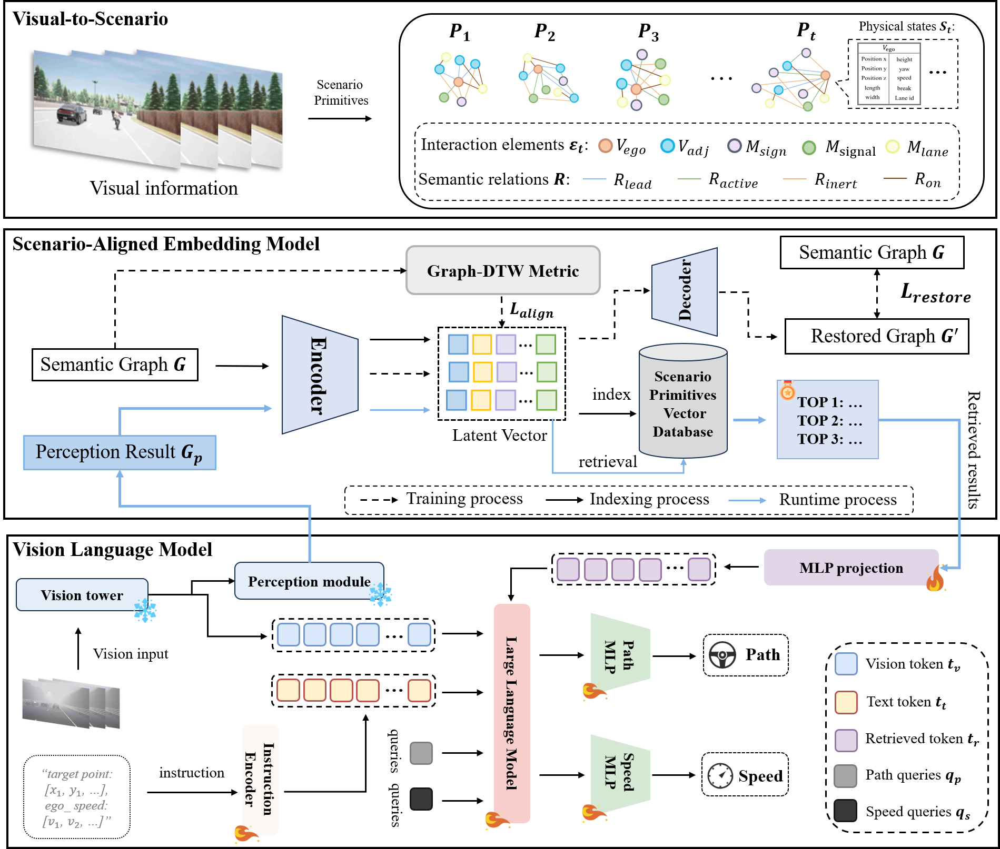
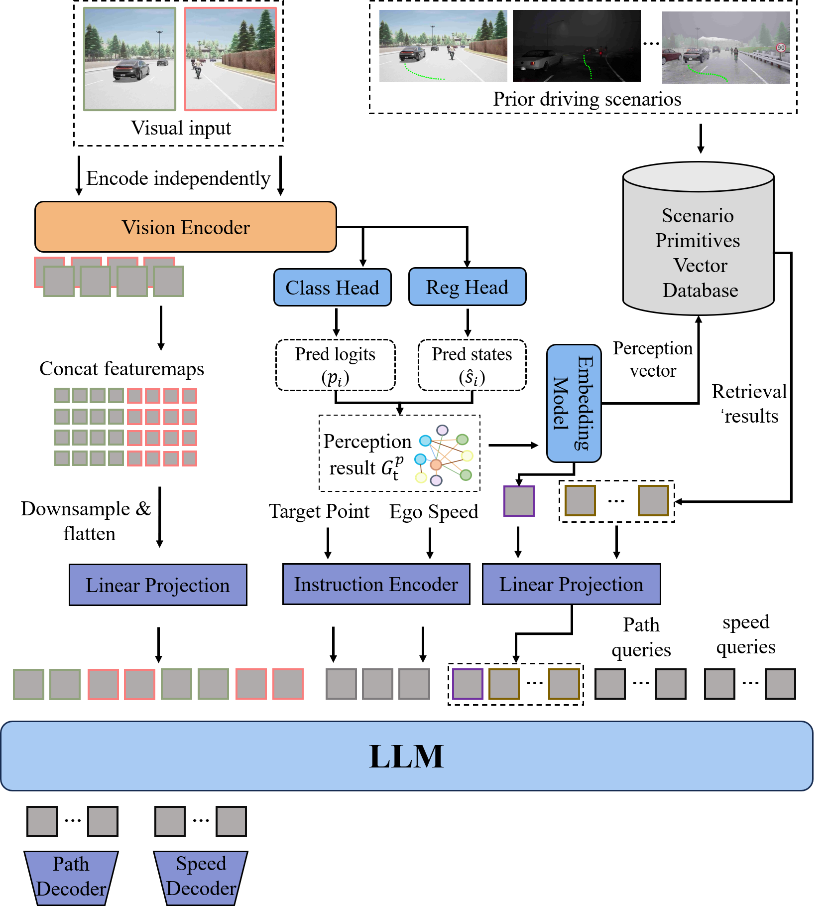
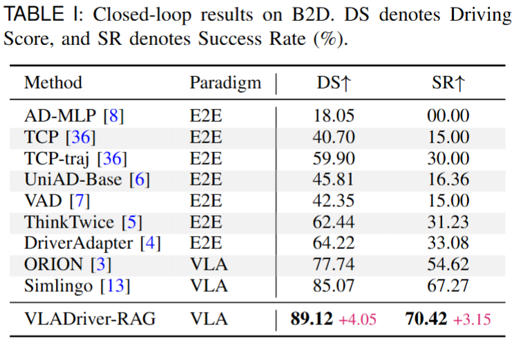
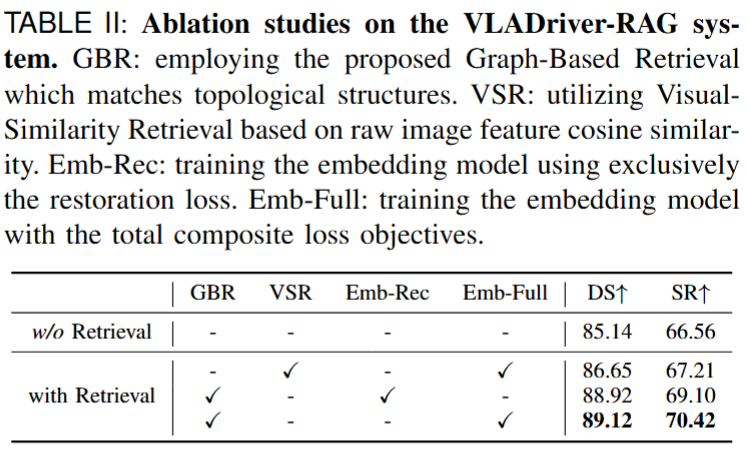
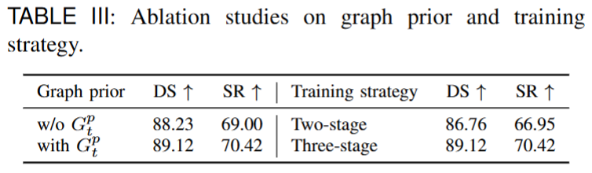
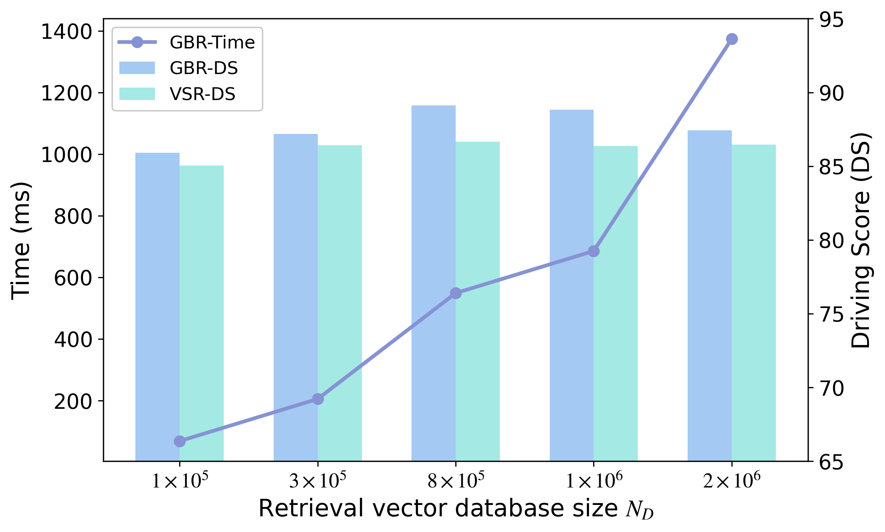

Overview

Architecture

VLADriver-RAG is built upon a retrieval-augmented Vision-Language-Action architecture that integrates real-time visual perception with structure-aware historical driving priors.
The framework first converts raw visual observations into semantic scenario representations through a Visual-to-Scenario mechanism. These structured representations are used to query a scenario primitive database and retrieve topologically aligned historical cases.
The retrieved context is then projected into the VLA backbone together with visual tokens, target points, and ego-state information. Finally, path queries and speed queries are decoded into disentangled trajectory and velocity planning outputs.
Quantitative Results
We evaluate VLADriver-RAG on the Bench2Drive benchmark and further analyze the effects of retrieval design, graph priors, training strategy, and database scale. In addition to quantitative comparisons, we also provide qualitative visualizations to illustrate the practical advantages of retrieval-augmented planning in challenging driving scenarios.




In challenging corner-case driving scenarios, the baseline often produces unstable or unsafe planning results, whereas VLADriver-RAG (b) is able to generate a safer and more reliable trajectory. These qualitative results demonstrate that retrieved historical knowledge effectively improves planning robustness and decision stability under uncertain environments.

Expanding the retrieval database generally leads to better driving performance by providing a richer pool of historical priors. However, this improvement also introduces higher retrieval latency. The results therefore reveal a clear trade-off between planning quality and retrieval efficiency, suggesting that the database size should be selected to balance driving score and inference speed in practical deployment.
Citation
@misc{zhao2026vladriverragretrievalaugmentedvisionlanguageactionmodels,
title={VLADriver-RAG: Retrieval-Augmented Vision-Language-Action Models for Autonomous Driving},
author={Rui Zhao and Haofeng Hu and Zhenhai Gao and Jiaqiao Liu and Gao Fei},
year={2026},
eprint={2605.08133},
archivePrefix={arXiv},
primaryClass={cs.CV},
url={https://arxiv.org/abs/2605.08133},
}